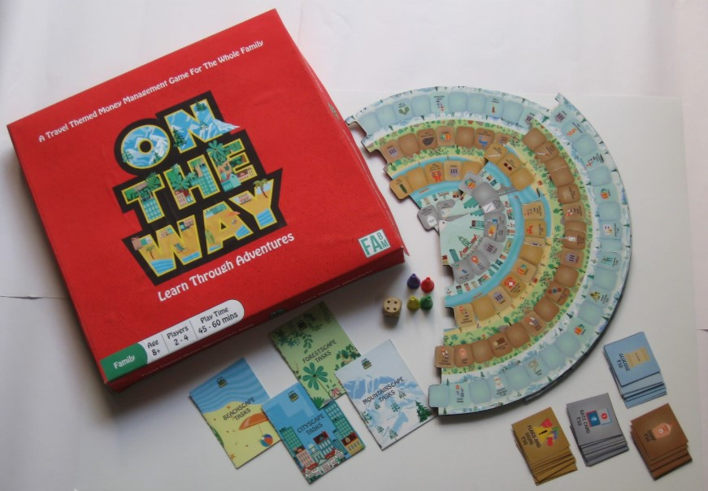

Selected Work
-

WMS Onboarding
Improving onboarding workflows in complex warehouse management systems through on-site research and stakeholder insights — enhancing clarity and first-time user adoption for warehouse operators.
View Case Study → -

Travel Hacks
Uncovering Gen Z backpacker needs for Lonely Planet through field research, diary studies, and contextual interviews — identifying the unmet "during-trip" phase and informing a new product direction.
View Case Study → -

On My Way — Board Game
Using multi-stakeholder research to design a family money management board game — from user interviews with families, kids, teachers, and psychologists to an award-winning playable prototype.
View Case Study →